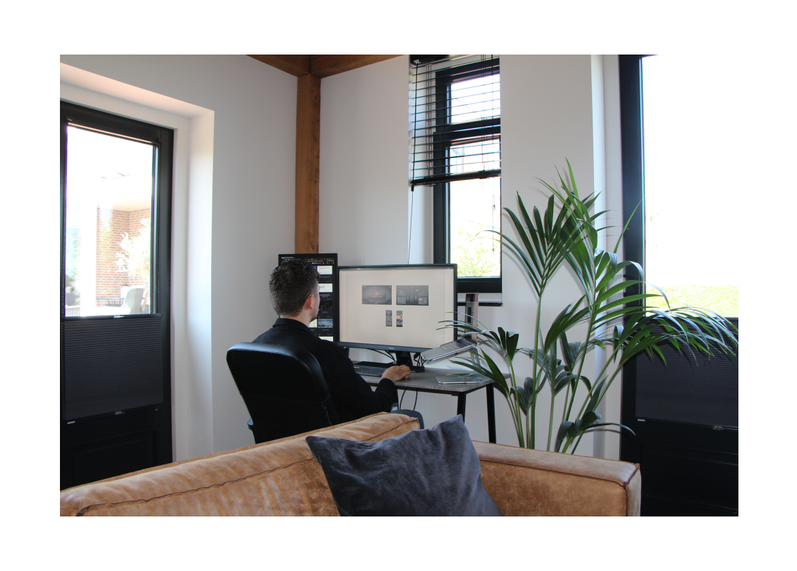

Menu
available for work
Beyond the pixels: Elevating brands through digital solutions
As a Digital product Designer my goal is to express my passion and drive to create innovative designs in the digital realm. My drive is to unleash the potential of every project, surpassing limits to achieve business and social milestones.

Hello there! I'm Bas van Iterson, a 26-year-old Digital product designer with a strong focus on UI design, UX design, branding, and digital products. My journey began as a Graphic designer, and over time, I honed and specialized my skills, eventually graduating as a UI/UX designer.
In my most recent position, I was part of the team at DPDK, a prominent Digital agency located in Rotterdam, the Netherlands. My role primarily focused as a supporting UX/UI designer, contributing to a range of projects for diverse clients such as Heineken, Diergaarde Blijdorp, and other exciting companies. Additionally, I developed a digital product for internal use, which served as my thesis project. Working at DPDK allowed me the opportunity to collaborate with multi-disciplinary teams with talented individuals from various backgrounds and different countries.
My process
How I work
Phase 01
Discovering the problem, goals and the solution
Clearly defining the problem and setting achievable goals are vital for finding a solution that meets business objectives. This process is essential to me.
Phase 02
Learning about the user using the (excisting) product
Researching and gaining insights from users play a crucial role in the product creation process. It helps uncover new problems, goals, and valuable insights, ultimately leading to the development of a better digital product.
Phase 03
Defining and iterating on digital concepts
Iteration is essential for exploring various solutions during the digital product creation process. This approach leads to a funnel effect, helping me identify and select the best options, ultimately resulting in a well-defined prototype.
Phase 04
Designing and testing custom prototypes
When designing a digital product, I test my prototypes by interacting with the design and clicking through the prototype. Ensuring the prototype is as realistic as possible is crucial to conduct effective tests. Making everything clickable and creating a smooth flow are essential steps in developing user-friendly concepts.
Phase 05
Delivering awesome and usable interfaces
When I deliver the final design, it's a real-time high-fidelity prototype that you can explore, providing a realistic overview of the digital product. This phase is the most exciting, as it reminds me how much I love this profession!